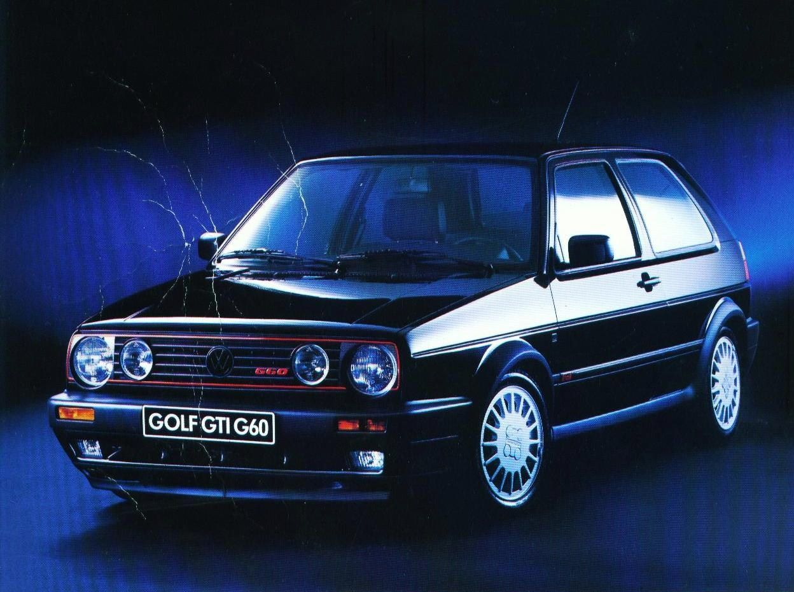

Вход на сайт:
Второе поколение авто, давшего название целому классу, считается одним из самых удачных за всю историю. Простые в эксплуатации, недорогие в обслуживании и крепкие машины до сих пор привлекают внимание на выставках и мероприятиях энтузиастов VAG. Было выпущено 6,31 млн. экземпляров, многие из них дожили до наших дней и встречаются на дорогах, хотя некоторым «Гольфам» уже под сорок лет.
Гольф 2 начали выпускать с августа 1983. Около года его собирали параллельно с первой генерацией. Golf 2 похож на предшественника, но формы стали более объемными. Авто длиннее на 30 см и шире на 5,5 см. Салон ощутимо крупнее, а машина комфортнее. Коэффициент аэродинамического сопротивления снизился с 0,42 до 0,34. Авто приобрело популярность и его собирали не только в Германии, но и еще в 7 странах Европы, а также в США и Японии. Покупателям предлагали трех и пятидверные хэтчбеки. С 1984 года начали продавать разновидность в кузове седан, которую назвали «Джетта». Самыми простыми были «C» и «CL». Это базовые варианты с небольшими моторами, но и они комплектовались различными опциями по запросу клиента.
Культовой на сегодня стала версия GTI. Ее выпускали с 1984 года, комплектовали разными моторами и совершенствовали. Мощный, но и более редкий вариант G60 оснащался механическим наддувом. Была и полноприводная серия G60 Syncro. Еще одной версией проходимого авто стала Rally, которая выделялась измененной оптикой, другими бамперами и решеткой радиатора, также там были расширены арки.
Базовыми были бензиновые двигатели объемом 1.3, 1,6 и 1.8 литра. Их комплектовали карбюраторами Pierburg – достаточно сложными конструктивно, но позволяющим настроить двигатель практически идеально. С 1984 года стали применять системы механического впрыска Jetronic, чуть позже появились одноименные варианты с электронным управлением. Фольксваген использовал и впрыск собственной разработки. На моторах объемом 1.3 литра ставилась модификация Digijet, на 1.8 – Digifant. В линейке были дизельные моторы на 1,6 и 1,8 л, а также турбированные варианты, отличающиеся мягкой работой и улучшенной динамикой. Все дизеля отличает экономичный расход топлива. GTI начали собирать с 1984 года, на заряженную версию ставили 8-клапанный агрегат на 112 «лошадей». В 1987 году появился вариант с 16-клапанным мотором, который выдавал 139 л. с. и считается одним из лучших за всю историю линейки. Двигатель PG с механическим нагнетателем G60 имел мощность 160 «лошадей» и устанавливался на некоторые заряженные версии. Последним стал вариант, в котором использовалась 16-клапанная головка блока цилиндров. За счет этого удалось увеличить отдачу до 210 л. с.
Сегодня эту машину выбирают те, кому нужно купить средство передвижения за небольшие деньги, но есть и категория ценителей. Они берут проект под восстановление, доводят до оригинального состояния и ездят по слетам и фестам.